技能拾遗¶
Lec01: Shell¶
Part 1¶
Shell环境与基本概念¶
Shell简介¶
在Linux系统中，Kernel是操纵计算机底层硬件的组件。计算机执行程序时，时时刻刻需要硬件的协调，而事实上这个过程是由用户对Kernel发起系统调用请求，由Kernel间接调用硬件来实现的，用户并没有直接操纵硬件的权限。另外，在早期的操作系统中，与操作系统直接交互往往非常复杂和不友好。因此，为了隔绝Kernel和用户层，防止用户直接干涉硬件，以及提高用户的体验，就出现了用户与操作系统的之间的交互接口——Shell
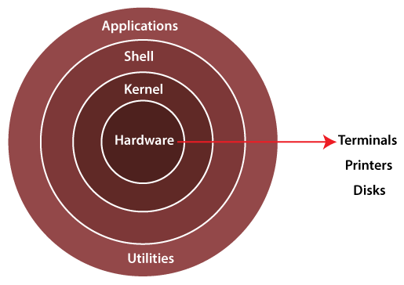
Shell和终端的区别¶
Shell
- Shell是一个用c语言编写的程序语言，它是用户使用Linux的桥梁，Shell既是一种命令语言，又是一种程序设计语言
- Shell是一种解释型语言，这种语言经过编写后不经过任何编译就可以执行，是一种脚本语言。和编译型语言是执行前翻译不同，解释型语言的程序是执行时翻译
- Shell的主要功能是提供命令解释和执行的能力。它允许用户执行操作系统任务，如管理文件、运行程序和控制进程。Shell也支持编写脚本，实现自动化任务。
- 例子: Bash（Bourne Again Shell）、Zsh（Z Shell）、Fish（Friendly Interactive Shell）等。
Shell和终端的区别¶
终端
- 终端（或终端仿真器）是一个软件程序，它模拟了传统的物理终端机的功能。终端为用户提供了一个与Shell交互的界面。
- 终端的主要作用是作为用户与Shell之间的通信桥梁。它允许用户输入命令，并显示来自Shell的输出。现代的终端仿真器提供了诸如标签页、颜色支持、字体调整等功能。
- 例子: Windows的命令提示符、PowerShell，macOS的Terminal、iTerm，Linux的GNOME Terminal、Konsole等。
Shell的两种形式¶
-
命令行界面(Command Line Interface, CLI): 这是Shell最常见的形式，它允许用户通过文本命令与计算机交互。用户可以输入命令，Shell则解释这些命令，并调用操作系统的相应功能来执行。这种Shell提供了强大的脚本语言支持，使得用户可以编写脚本来自动化各种任务。
-
图形用户界面(Graphical User Interface, GUI): 虽然通常不称作Shell，但GUI也是一种用户界面，它提供图形化的方式来与操作系统交互。在某些操作系统中，比如Windows，GUI是主要的交互方式，但在其他系统中，比如Linux或Unix，命令行Shell更常见。
Shell的分类¶
常见的Shell包括：
-
Bash(Bourne Again SHell): Linux和Mac OS X的默认Shell，非常强大，支持复杂的脚本和任务自动化。
-
Zsh(Z SHell): 类似Bash，但提供更多的特性和定制选项。
-
Fish(Friendly Interactive SHell): 用户友好，易于使用的现代Shell。
-
CMD.exe: Windows的传统命令行界面。
-
PowerShell: Windows的先进命令行界面，集成了脚本语言。
Shell环境初探¶
两个简单的指令：
- date指令：显示设备的系统日期与时间
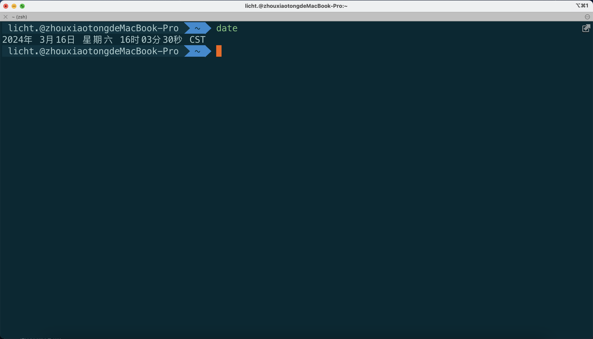
Shell环境初探¶
两个简单的指令：
- echo指令：将echo后的内容打印到屏幕上
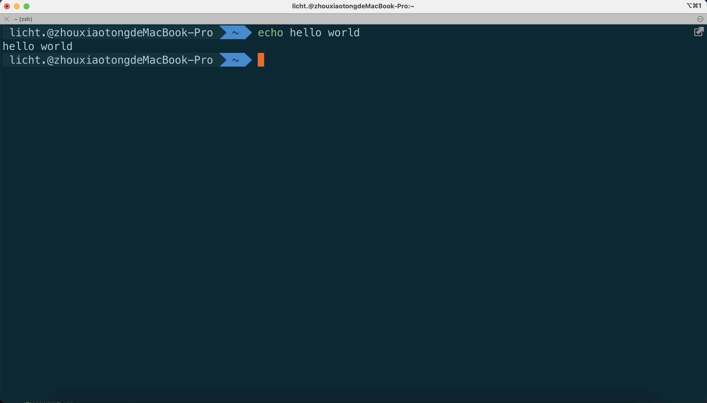
Part 2¶
文件系统操作¶
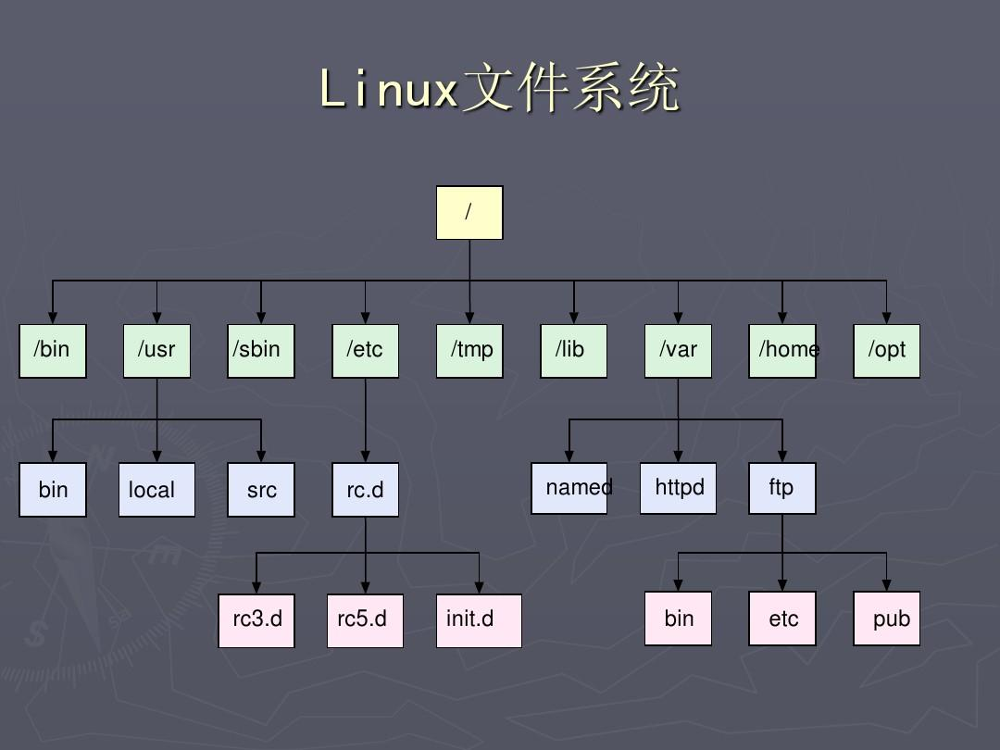
工作目录¶
在我们使用Shell时，都是在特定的目录下工作，这个目录就叫工作目录，可以用pwd指令进行查看。通常，我们在计算机中表示某个文件或是目录时，会使用相对路径或是绝对路径，pwd指令显示的是绝对路径
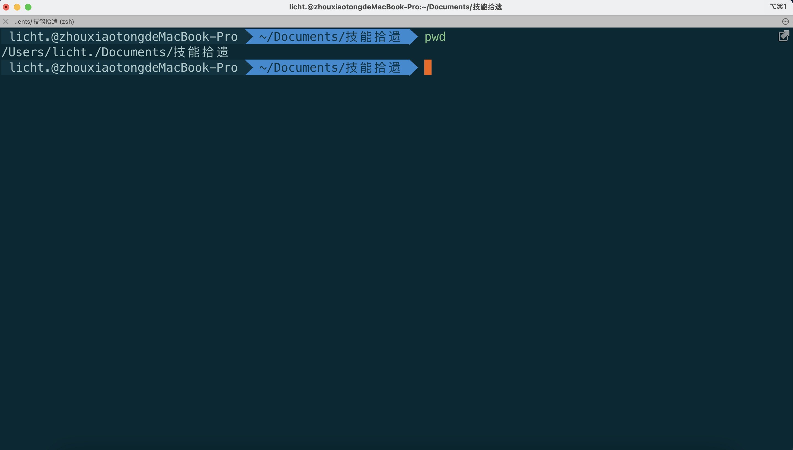
打印目录信息¶
有时，我们需要去查看目录中有哪些文件以及子目录，那么就可以使用ls指令，它会列出目标目录中的所有文件和目录（默认参数下不包含隐藏文件、目录）
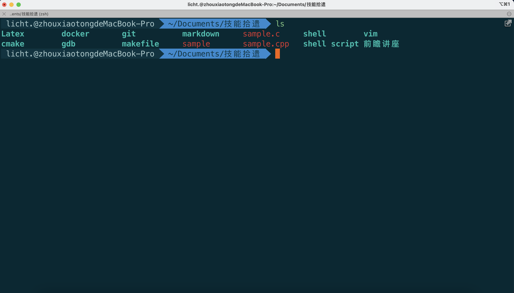
在不同的目录中进行切换¶
cd指令将是我们使用得最频繁的指令，它可以让我们切换到不同的目录下，进而简化我们的操作难度（否则我们每次都需要去指示操作的目录，这会十分繁琐）
cd指令包含以下常用方式：
-
cd [target dir]: 切换到指定的目录，这里可以是相对路径或是绝对路径
-
cd ~: 切换到home目录
- cd -: 切换到上次所在的目录，可以使用该指令实现两个目录间的频繁切换
- cd ..: 切换到上级目录
创建新文件¶
使用touch指令可以创建一个新的空文件
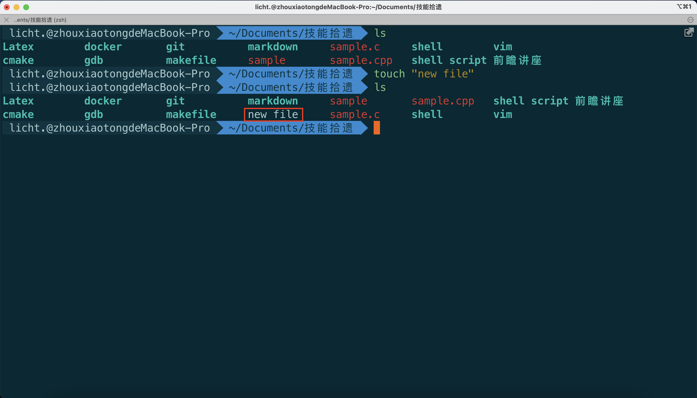
删除文件¶
使用rm指令可以删除指定的文件
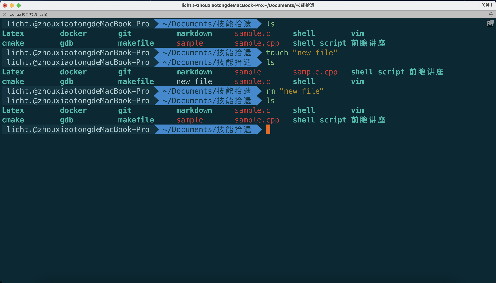
创建新目录¶
使用mkdir指令可以创建一个新的空目录
创建新目录(cont.)¶
有时我们可以需要创建一个多层的目录，这个时候可以使用mkdir -p指令来实现
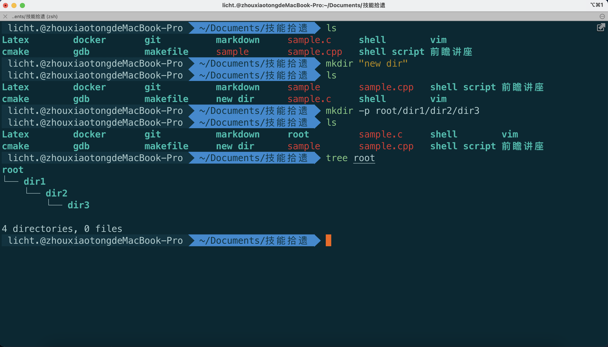
删除目录¶
对于一个空目录，我们可以使用rmdir指令来完成
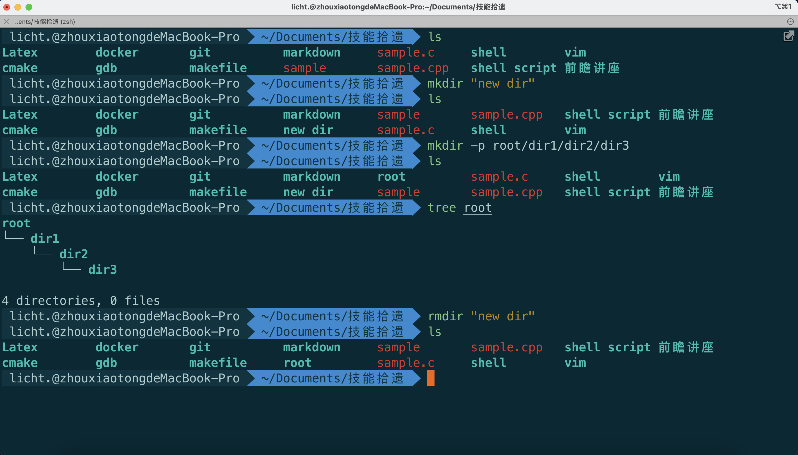
删除目录(cont.)¶
通常我们使用更多的方式是rm -r指令或者rm -rf指令
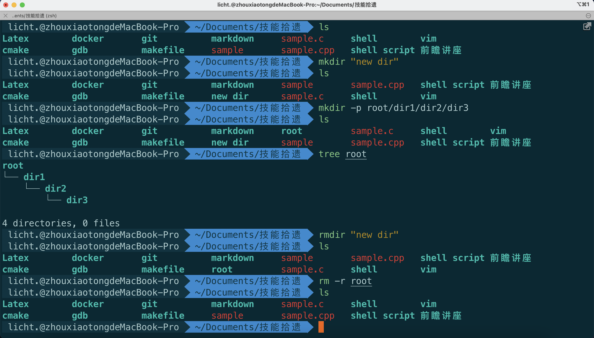
文件移动、重命名¶
mv指令是个很有意思的指令，它可以实现两种功能：一种是将文件或目录移动到指定的目录下；另一种则是对文件或目录进行重命名
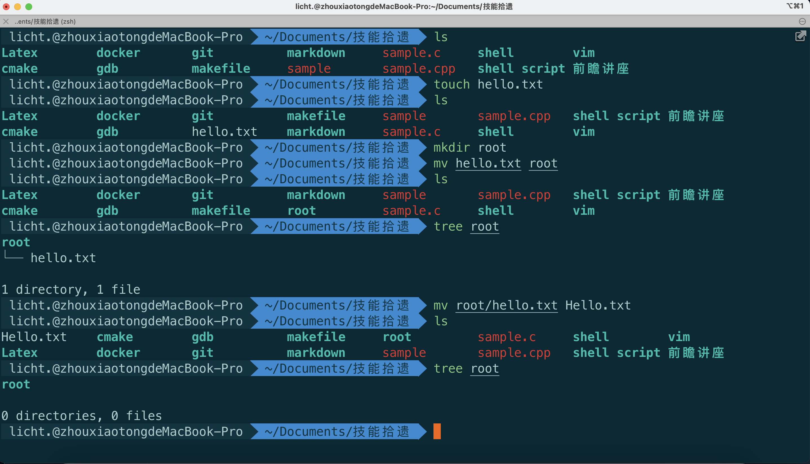
文件的复制¶
cp指令为我们提供了复制文件或目录的功能
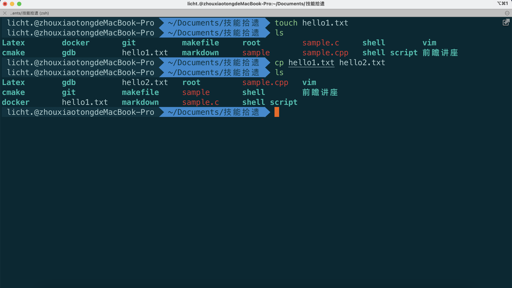
Part 3¶
基础文本操作¶
查看文件内容¶
cat指令可以在屏幕上打印出目标文件的内容
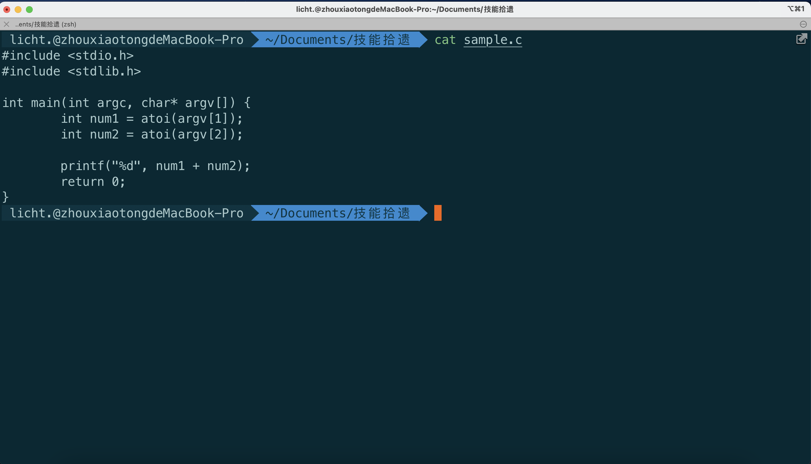
查看文件内容¶
- less指令：针对于大型文本文件，可以进行分页查看，通过键盘上下箭头键或page up、page down键进行翻页
- head指令：快速查看文件的开始部分，默认情况下，只显示文件的前10行。
- 可以指定选项来控制行数，例如 head -n 20 [filename] ，则可以查看指定文件的前20行
- tail指令：类似于head指令，快速查看文件的末尾部分，默认情况下，只显示文件的最后10行
- 可以指定选项来控制行数，例如 tail -n 20 [filename] ，则可以查看指定文件的末尾20行
编辑文件内容¶
使用vi指令或vim指令可以进行文件的编辑，注意需要按下i键才可以进入编辑模式
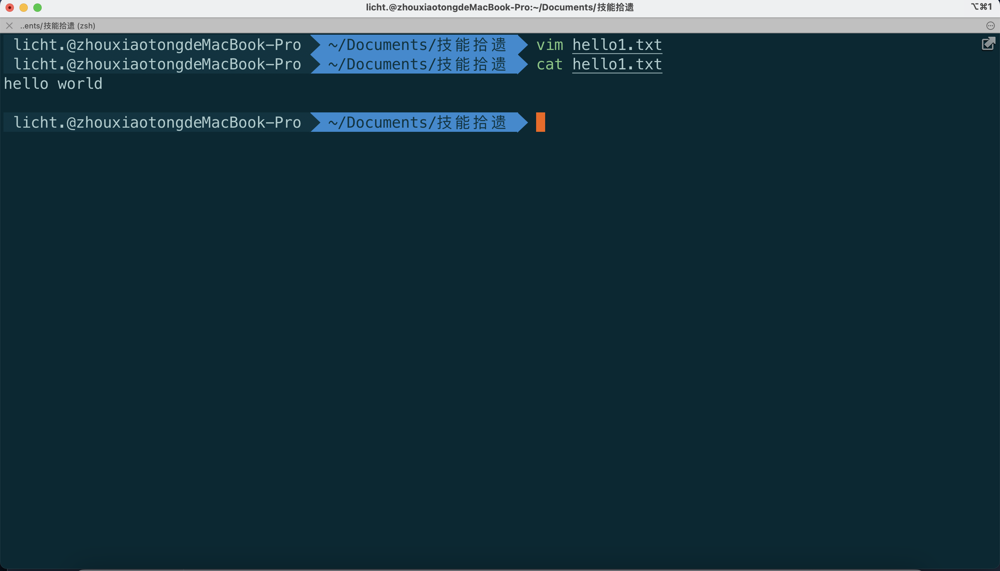
文本搜索¶
使用grep指令可以进行文本搜索，格式为 grep [模式] [文件]，则会在指定文件中去寻找目标模式（遵循正则表达式）的文本，并打印出来
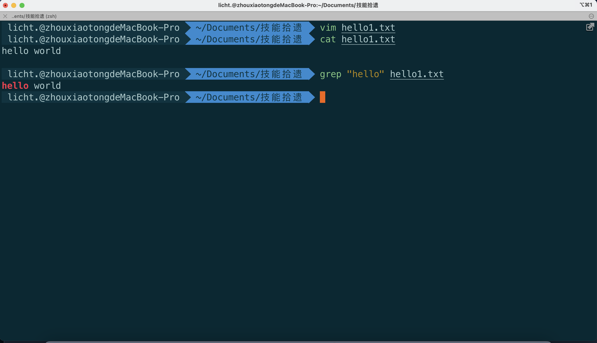
文本排序¶
使用sort指令可以对文本进行排序，格式为 sort [filename]，它会按照字典序对文本中的行进行排列
可选选项：
- -n：基于数值而不是字母顺序进行排序。
- -r：逆序排序。
- -k：指定排序依据的列。例如，sort -k 2 filename.txt 会根据第二列的内容排序。
- -u：删除重复行，只保留唯一行。
Part 4¶
重定向与管道¶
简单的重定向符<、>¶
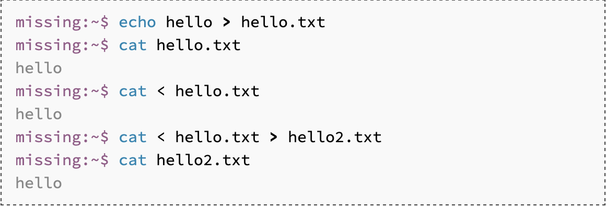
重定向追加符>>¶
如果使用>>符号，则可以向文本中追加内容
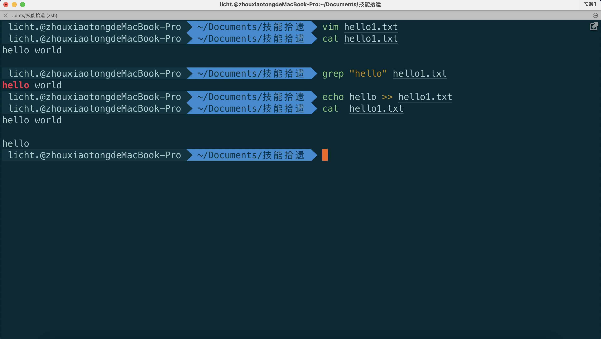
重定向¶
标准输出重定向（> 和 >>）:
- >用于将命令的输出重定向到一个文件，如果文件已存在，则会被覆盖。
-
例如，ls > filelist.txt 将当前目录的内容列表输出到 filelist.txt，覆盖该文件原有内容。
-
>>用于将命令的输出附加到一个文件的末尾，而不是覆盖它。
- 例如，ls >> filelist.txt 将当前目录的内容列表追加到 filelist.txt 的末尾。
标准错误重定向（2> 和 2>>）:
- 与标准输出重定向类似，但它是针对命令的错误信息。
- 例如，grep 'text' nonexistfile.txt 2> errorlog.txt 将错误信息（在这里是因为 nonexistfile.txt 不存在）重定向到 errorlog.txt。
管道¶
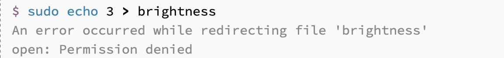
管道(cont.)¶
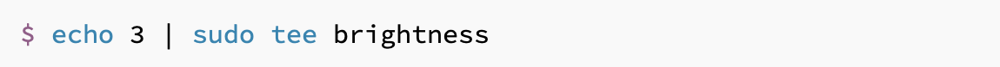
管道¶
管道可以将一个命令的输出与一个命令的输入连接起来
简单管道:
- 例如，ls | sort 将 ls 命令的输出（当前目录的文件列表）直接传递给 sort 命令，对文件列表进行排序。
管道与 grep:
- 你可以结合管道和 grep 来搜索特定的输出。例如，ls -l | grep '^d' 会列出当前目录中所有的目录（'^d'表示匹配以d开头的字符串，在ls -l的输出结果中也就对应了目录）。
多重管道:
- 可以将多个命令通过管道连接起来。例如，cat file.txt | grep 'text' | sort 会首先显示 file.txt 的内容，然后从中筛选包含 "text" 的行，最后对这些行进行排序。
Part 5¶
其他指令¶
gcc编译指令¶
在我们有多个文件需要放在一起编译时，例如add.c，subtract.c，multiply.c，divide.c，main.c，我们使用gcc指令进行编译
gcc 'add.c' 'subtract.c' 'multiply.c' 'divide.c' 'main.c' -o 'program'
查看进程指令¶
ps指令可以查看正在运行的进程，使用kill [pid]可以结束进程
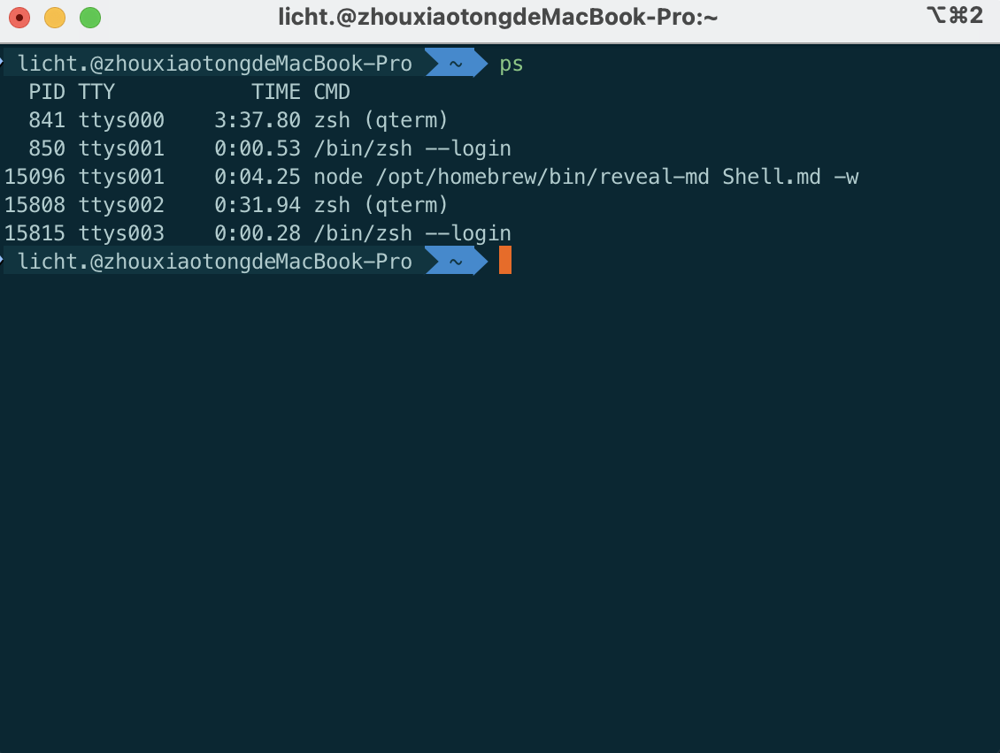
find指令¶
find 命令是 Unix 和类 Unix 系统中用于基于各种条件搜索文件的强大工具
例如要对所有 .txt 文件进行权限修改
find . -iname "*.txt" -exec chmod 777 {} \;
这里 . 表示当前目录，-iname 表示不区分大小写的文本匹配，*.txt 是匹配的模式，表示以 .txt 结尾的文件，-exec 紧跟要执行的指令，这里是用了 chmod 指令，{} 指代前面find找到的所有文件，\; 表示结束，由于分号会有歧义，所以需要转义
find指令(cont.)¶
类似地，还可以这样写
find . -type f -exec rm {} \;
-type 表示查找文件类型，f 表示文件（d 表示目录），这个指令就是该目录下删除所有文件
要注意的是，find指令是会递归执行的，所以包括它子目录里的文件都会受到影响